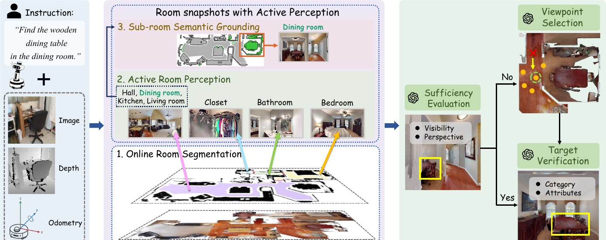
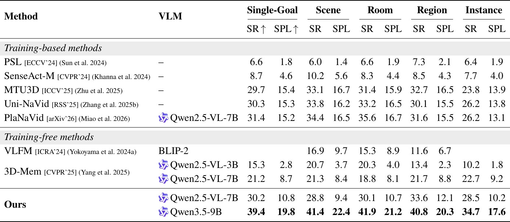
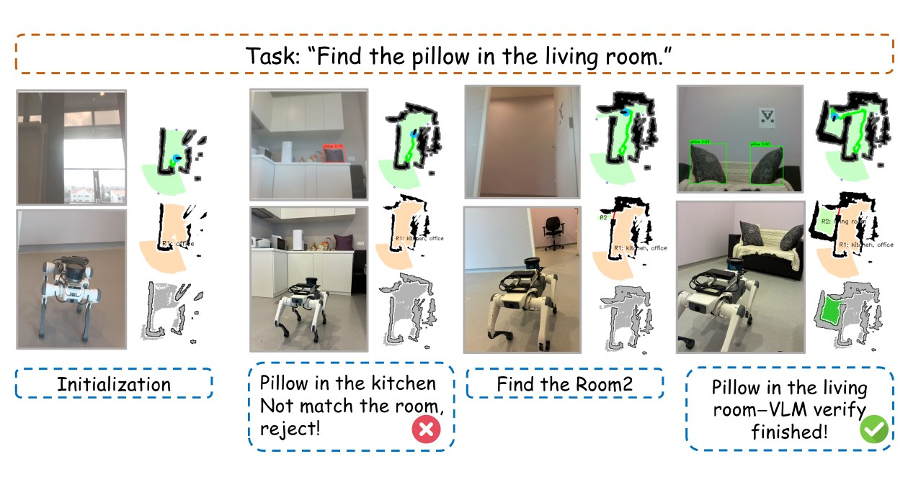

SAP-Nav: Hierarchical Spatial Representation Meets Active Perception for Multi-Granularity Open-Vocabulary Object Navigation
Abstract
Open-vocabulary object navigation (OVON) is commonly formulated at the category level, whereas practical instructions often specify goals at different semantic granularities through room context, region identity, or instance attributes. Grounding such goals online requires spatial-semantic reasoning and reliable target disambiguation. We propose SAP-Nav, a fully online, training-free system that integrates active perception into scene representation and target verification for multi-granularity OVON. SAP-Nav builds a Hierarchical Spatial-Augmented Representation (HiSAR) from actively acquired room views for fine-grained spatial-semantic reasoning, and employs Active Viewpoint Verification (AVV) to assess view sufficiency, seek informative viewpoints, and verify candidates against the specified category and attributes. Experiments on two OVON benchmarks show that SAP-Nav achieves state-of-the-art performance, including an 8.5-point gain over training-based competitors on instance-level navigation, validating the effectiveness of active perception for multi-granularity goal grounding. Real-world robot experiments further demonstrate its practical feasibility. Code will be made publicly available.
Method & Results

Overview of SAP-Nav. Given egocentric RGB-D observations, odometry, and an instruction at any granularity, SAP-Nav operates fully online through two active-perception modules: HiSAR converts actively acquired room views into a queryable hierarchical spatial-semantic representation, and AVV assesses viewpoint sufficiency, actively repositions to informative views, and verifies candidates against the goal category and attributes.

Evaluation on LangMap. SAP-Nav achieves state-of-the-art SR and SPL at every granularity level, improving SR by 8.0 points on Single-Goal and by 8.5 points on the most challenging instance level over the strongest training-based method — without any navigation training. On HM3D-OVON val unseen, SAP-Nav reaches 49.7 SR, the highest among all compared methods.

Real-world deployment. SAP-Nav runs on a Deep Robotics Jueying Lite3 quadruped with an RGB-D camera and Lidar, and executes multi-granularity OVON instructions in indoor scenes: a pillow found in the kitchen is rejected for mismatching the instructed room, and the target is verified only in the living room.
BibTeX
BibTeX will be available after the double-blind review process.